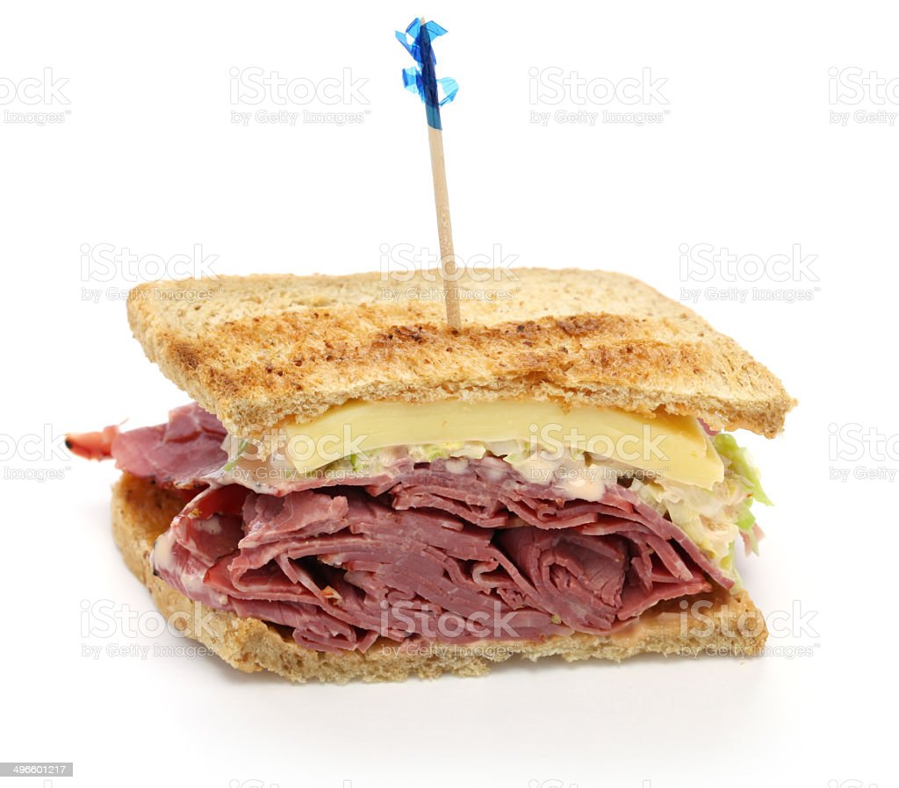

Reubin Sandwich

A brief History of the meal
Reuben sandwich is a North American grilled sandwich composed of corned beef, Swiss cheese,
sauerkraut, and Thousand Island dressing or Russian dressing, grilled between slices of rye bread.
It is associated with kosher-style delicatessens,but is not kosher because it combines meat and
cheese.
Ingredients
- 8 slices rye bread
- ½ cup Thousand Island dressing
- 8 slices Swiss cheese
- 8 slices deli sliced corned beef
- 1 cup sauerkraut, drained
- 2 tablespoons butter, softened
How to make Reubin Sandwich step by step
- Spread the dressing on one side of each slice of bread.
- Assemble the sandwiches. Butter the top of each sandwich.
- Place the sandwich butter-side down on the hot skillet or griddle.
- Butter the other side. Flip when the bottom slice is golden brown.
- Grill until both sides are golden brown.